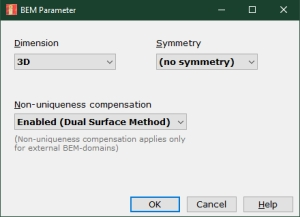
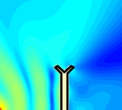

Form - BEM Parameters
| Home |
 |
 |
 |
 |
 |
 |
Specifies properties of the Boundary Element Method, such as Dimension, Symmetry and Non-uniqueness.
Note, changing these parameters will make necessary a re-solving.
Open this form at menu Global/BEM Parameters.
Dimension
Specifies the dimension of the Helmholtz Integral of the Boundary Element Method.
3D is the default mode and enables full 3D-fields of sound pressure distribution. Special 3D-symmetries can be exploited with the help of parameter Symmetry (see below). In 3D there are three Cartesian coordinates labelled "x", "y" and "z".
CircSym is a special symmetry in 3D. It assumes a field of a circular symmetry. This means pressures are identical along rings. Because of this also boundaries should be of a circular symmetric design. Under circular symmetry part of the analysis is carried out analytically, which accelerates the calculation. The circular symmetric coordinate system has two axis, one labeled "Axial" and the other is named "Radial". Any point specified is regarded to describe a ring around the axial axis. For boundaries two points form a truncated cone section, which includes the duct and the annulus. For Observation-Fields two points create a flat quadrilatural where one side is the axial axis.
2D assumes that one dimension can be fully separated from the Helmholtz Equation and we assume wave-propagation only in the x- and y-plane. In the other plane we assume no excitation of waves. In the far-field the sound pressure drops only by 1/sqrt(Distance). This is an artefact, which stems from the assumption of infinite extension in the z-direction. Pressure is understood as per meter: "SPL/m". 2D can be useful in cases. First, the 2D-approach is quick in terms of calculation time. Further, geometry is easily specified because boundaries are line-segments. 2D is mostly used to obtain an impression or a clue about the wave-field in a room or in the presence of scatteres. Absolute SPL-values need to be re-considered in practical applications because the 2D assumes infinite long wakes of waves which in reality would be spherical.
Symmetry
Specifies a symmetry for the Boundary Element Mode in order to speed-up calculation time. Symmetry works only for Dimension=3D. The way of specification is by normals of the plane of symmetries. For example in case of Symmetry=x the x-axis is the normal of the plane of symmetry, which is the yz-plane. For two planes of symmetry use a specifier from the set [xy, xz, yz]. For example Symmetry=xy means that in the first step all coordinates are mirrored along the x-axis. In a second step all points are mirrored along the y-axis. Three planes of symmetry are rare and result in a symmetry in all 8 octants of a sphere.
If Symmetry is specified then AKABAK expects only part of the model. It will then complete the structure by mirroring entries. For example, if you entered a point at x= 1.0, 0.0, 0.0 and Symmetry=x then the internal mirror-point would be at x'= -1.0, 0.0, 0.0.
This is also true for mesh-files. If you plan to exploit symmetry then create a copy of your CAD-drawing which shows only part of the whole structure. The structure should be entered with the idea in mind that AKABAK will complete the structure. For example, there should be no Boundary Elements in the plane of symmetry.
Note, that not only the field is mirrored but also all sources, such as driven Elements, Diaphragm and Pressure Sources, etc.
Subdomains are mirrored as well. If a subdomain is complete in the original part of the structure then the whole sub-domain is copied. If the subdomain is across the plane of symmetry then it is made complete.
Symmetry mirrors the structure only for the visual representation. Acoustically, we assume that also the pressure field is symmetric. For example, with Symmetry=x we assume that the field on the positive side of the x-axis is identical to the one on the negative side. The speed-advantage in calculation stems from the usage of special Green-functions. Not only integration is faster but also the size of the system-matrices to solve for are smaller. For one plane of symmetry this matrix is reduced to 1/4. For two planes it reduces to 1/8.
Symmetry and Coupling to Lumped Element Network
If we have a boundary, which is not cut by the plane of symmetry then it will be duplicated. And because Symmetry enforces symmetric fields this means that a mirrored vibrating source should be identical to the original. However, if we couple such sources to the Lumped Element Network we get a conflict here because the Lumped Element Network provides degrees of freedom, which may violate the symmetry.
 |
 |
 |
| No symmetry | Symmetry wrong | Symmetry correct |
For example, a speaker system with two drivers symmetrically spaced in a symmetric enclosure is a good candidate for exploiting symmetry. Basically, in this particular case, we have the choice between two planes of symmetry. If we cut horizontally we would duplicate the diaphragm. Hence we would have a single driver with two diaphragms... If we cut vertically, the two diaphragms would be halved, however, AKABAK will take care of this situation and will provide the correct calculation. The second case allows to drive the diaphragm individually.
Non-Uniqueness Compensation
Non-Uniqueness Compensation (NUC) compensates for the Non Uniqueness Problem of the Boundary Element Method.
NUC does affect pure exterior domains.
NUC does affect mixed exterior-interior set-ups of sub-domain modelling. If enabled, the NUC-method will be applied to the exterior sub-domains only.
NUC does not affect interior domains, and its settings are ignored here.
The default NUC-method is specified at Preferences.
Enables the Dual Surface Method
Disable yields no NUC-method to be applied. If we do not expect too much damage by the non-uniqueness-phenomenon then we can disable the method. Calculation time is faster without NUC-method. For example, because the non-uniqueness problem is more likely to occur at high frequencies, we can switch off the method for the analysis which is carried out at low frequencies such as the calculation of woofers.
The NUC-method extends the solving time because we have to perform each integral twice. However, the quality of the solution increases, especially at high frequencies and voluminous radiating bodies. For an analysis at low frequencies the non-uniqueness compensation may be switched off. Whether you need or can omit the NUC cannot be said in general. It depends on the individual project and must be left to experimentation. See also AKABAK Examples/BEM/CircSym/CS Sphere Breathing.akp
The Dual Surface Method
AKABAK applies the Dual Surface Method [27]. The Dual Surface Method creates a cloud of target points which are outside the domain, which the boundaries encapsulate. Because here we deal with the exterior domain, this means that these new target points should be within the radiating body. The Helmholtz Integral should yield zero sound pressure for these points, which gives a criterion for which we can solve for, especially when other means of solving become invalid. The cloud of target points are located on an auxiliary surface. Each new point "hovers" above one of the classical target points, which is typically the center point of the boundary element. The offset δ gets dynamically adjusted
k·δ = 2.2
δ is clamped at δ < 2·√(A/π)
with A, area of boundary element and k, wave-number. The idea here is that in this way the second surface can be hardly on a modal nodal surface of the interior domain.